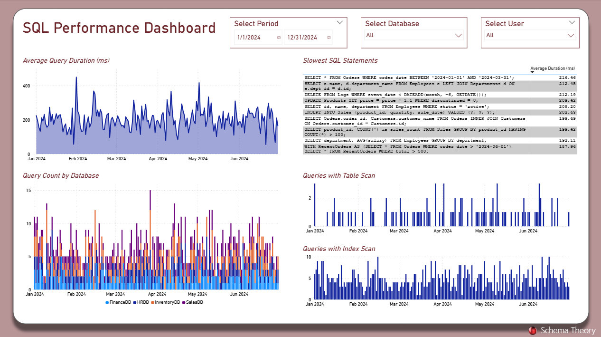

SQL Query Performance
Description
Monitor query execution metrics to optimize database performance and reduce system strain.
Visual Example

Key Metrics
- Top 10 Slowest Queries by Duration
- Query Count by Day
- Average Execution Time
- Index Usage vs. Full Table Scans
Usage Notes
Populate this dashboard with your database’s execution logs (e.g., SQL Server Query Store, Oracle AWR, PostgreSQL logs).